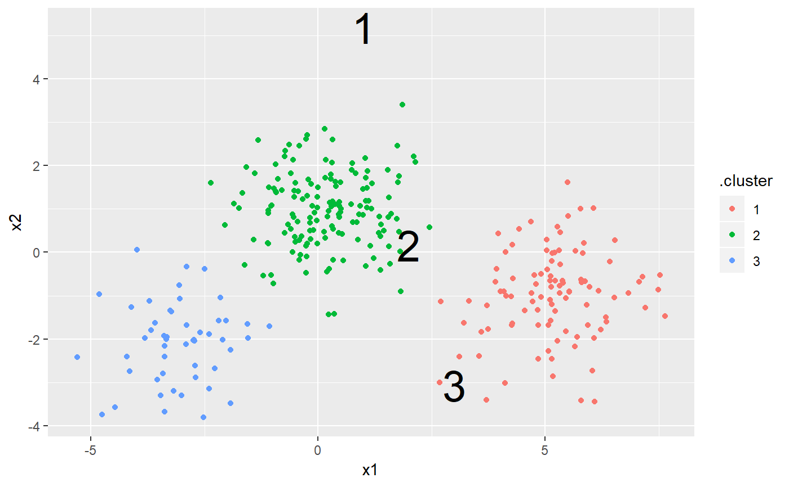

These methods summarize the results of k-means clustering into three
tidy forms. tidy describes the center and size of each cluster,
augment adds the cluster assignments to the original data, and
glance summarizes the total within and between sum of squares
of the clustering.
# S3 method for kmeans tidy(x, col.names = paste0("x", 1:ncol(x$centers)), ...) # S3 method for kmeans augment(x, data, ...) # S3 method for kmeans glance(x, ...)
| x | kmeans object |
|---|---|
| col.names | The names to call each dimension of the data in |
| ... | extra arguments, not used |
| data | Original data (required for |
All tidying methods return a data.frame without rownames.
The structure depends on the method chosen.
tidy returns one row per cluster, with one column for each
dimension in the data describing the center, followed by
The size of each cluster
The within-cluster sum of squares
A factor describing the cluster from 1:k
The cluster assigned by the k-means algorithm
The total sum of squares
The total within-cluster sum of squares
The total between-cluster sum of squares
The numbr of (outer) iterations
kmeans()
library(dplyr) library(ggplot2) set.seed(2014) centers <- data.frame(cluster=factor(1:3), size=c(100, 150, 50), x1=c(5, 0, -3), x2=c(-1, 1, -2)) points <- centers %>% group_by(cluster) %>% do(data.frame(x1=rnorm(.$size[1], .$x1[1]), x2=rnorm(.$size[1], .$x2[1]))) k <- kmeans(points %>% dplyr::select(x1, x2), 3)#>tidy(k)#> # A tibble: 3 x 6 #> x1 x2 x3 size withinss cluster #> * <dbl> <dbl> <dbl> <int> <dbl> <fct> #> 1 1 5.18 -0.987 99 205. 1 #> 2 1.99 0.158 0.980 151 258. 2 #> 3 3 -3.07 -2.09 50 78.6 3#> # A tibble: 6 x 4 #> cluster x1 x2 .cluster #> <fct> <dbl> <dbl> <fct> #> 1 1 4.43 0.542 1 #> 2 1 5.32 -0.941 1 #> 3 1 5.13 -1.58 1 #> 4 1 6.35 -1.60 1 #> 5 1 3.71 -3.41 1 #> 6 1 5.32 -0.772 1glance(k)#> # A tibble: 1 x 4 #> totss tot.withinss betweenss iter #> <dbl> <dbl> <dbl> <int> #> 1 3771. 542. 3230. 2ggplot(augment(k, points), aes(x1, x2)) + geom_point(aes(color = .cluster)) + geom_text(aes(label = cluster), data = tidy(k), size = 10)